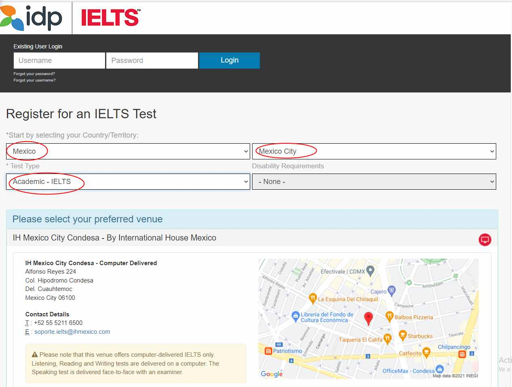
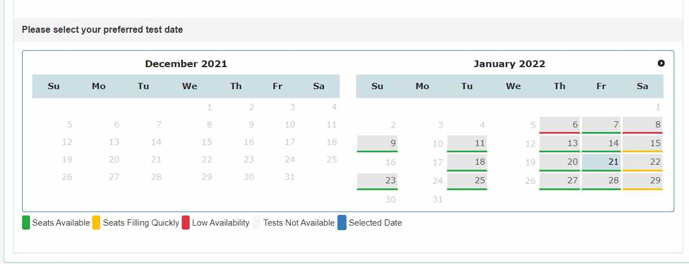

Estimados alumnos de Universidad Humanitas te damos la bienvenida a tu certificación de inglés recuerda que este paso es importante dentro de tu trayectoria educativa y profesional.
Antes de realizar tu inscripción lee los terminos y condiciones,si estas de acuerdo procede.
2. Ingresa en el siguiente link y selecciona los datos como se indican en la imagen. Si necesitas algún requerimiento por discapacidad selecciónala.
Da click aquí para hacer tu registro
3. Selecciona la fecha de tu examen.
